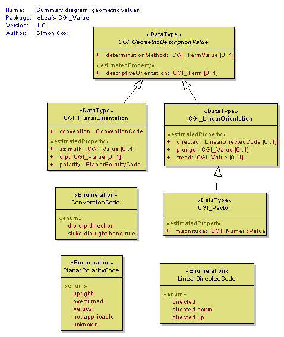

Package GeoSciML/CGI_Value
The GeoSciML "CGI_Value" model provides a generic way of encoding "literal" values, both textual and numeric, which have uncertainty and may be a range. These structures are designed to be able to capture value descriptions as conventionally recorded by geologists.
The Value structures are for when you need
1. a qualifier,
2. to be able to use either single values or ranges, or
3. to express uncertainty on numeric values
4. use numbers or words as alternatives for a single value or in a mixed range
e.g. "usually X", "greater than Y" where X and Y are either a Measure (number with a scale) or Term (word from a vocabulary) or a range constructed from measures and terms
"CGI_GeometricDescriptions" allow describing the planar or linear orientation of a geologic feature. Allows specifying direction by DirectionVector (eg Dip/Dip Direction), compass point (NE), description ("toward fold hinge", "below')
These values are usually obtained as the result of an observation. The description of the associated observation event will provide more detail about the observation method, result quality, etc.
Class Summary |
|
| <<DataType>> Classes | |
CGI_GeometricDescriptionValue
<<DataType>>
|
Description of the planar or linear orientation of a geologic feature. Allows specifying direction by DirectionVector (eg Dip/Dip Direction), compass point (NE), description ("toward fold hinge", "below') |
CGI_LinearOrientation
<<DataType>>
|
Description of the geometry of a line. |
CGI_NumericRange
<<DataType>>
|
Allows specifying a range of numeric values (eg 443.7+-1.5 to 359+-2.5) by specifying an upper and lower CGI_NumericValue |
CGI_NumericValue
<<DataType>>
|
Numerical data type |
CGI_PhysicalDescription
<<DataType>>
|
Numbers and word values with a pointer to the semantics |
CGI_PlanarOrientation
<<DataType>>
|
Description of the geometry of a plane. |
CGI_PrimitiveValue
<<DataType>>
|
Abstract class to capture CGI data types |
CGI_Range
<<DataType>>
|
Allows specifying a range consisting of both terms and numeric values (eg Silurian to 359.2+-2.5Ma) by specifying an upper and lower CGI_TermValue or CGI_NumericValue |
CGI_TermRange
<<DataType>>
|
Allows specifying a range of terms (eg Silurian - Devonian) by specifying an upper (Devonian) and lower (Silurian) CGI_TermValue |
CGI_TermValue
<<DataType>>
|
Where the value is from a ControlledVocabulary, the string shall be the value of the preferredName on the ControlledConcept; the codeSpace shall indicate the ControlledVocabulary; where the value is from an informal vocabulary, the codeSpace shall indicate the identity of that vocabulary and the string shall be a term from the vocabulary ... somehow |
CGI_Value
<<DataType>>
|
The Value structures are for when you need 1. a qualifier, 2. to be able to use either single values or ranges, or 3. to express uncertainty on numeric values 4. use numbers or words as alternatives for a single value or in a mixed range e.g. "usually X", "greater than Y" where X and Y are either a Measure (number with a scale) or Term (word from a vocabulary) or a range constructed from measures and terms |
CGI_Vector
<<DataType>>
|
data type for linear orientation with magnitude. Cardinality on magnitude is 1, if magnitude is unknown use CGI_LinearOrientation |
| <<Union>> Classes | |
CGI_Numeric
<<Union>>
|
A union class that allows the value to either be a CGI_NumericValue or a CGI_NumericRange |
CGI_Term
<<Union>>
|
A union class that allows the value to either be a CGI_TermValue or a CGI_TermRange |
| <<Enumeration>> Classes | |
ConventionCode
<<Enumeration>>
|
Code list to specify the convention used for the orientation measurement |
LinearDirectedCode
<<Enumeration>>
|
Code list to capture terms related to directedness of linear orientations |
PlanarPolarityCode
<<Enumeration>>
|
values to use for expressing overturned property on planar orientation measurements. |
ValueQualifierCode
<<Enumeration>>
|
Enumeration list for valueQualifierCode attribute on CGI_Value |
Tagged Values |
||
| Tag | Value | Notes |
| xsdDocument | value.xsd | Description: Relative path to XML Schema document corresponding to this package. |
UML Diagram: Summary diagram: geometric values
